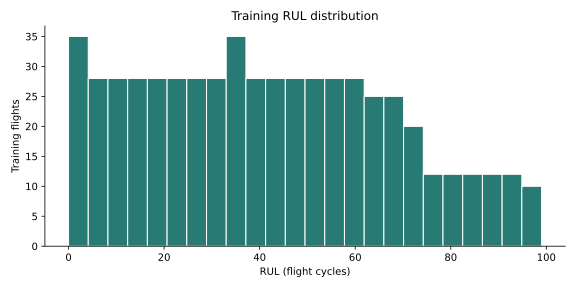
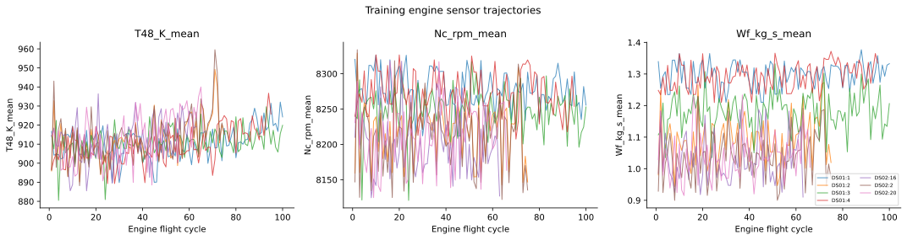
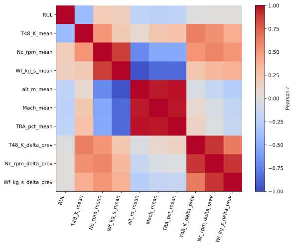
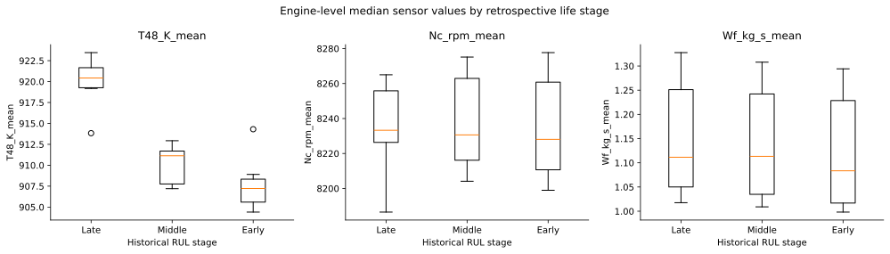
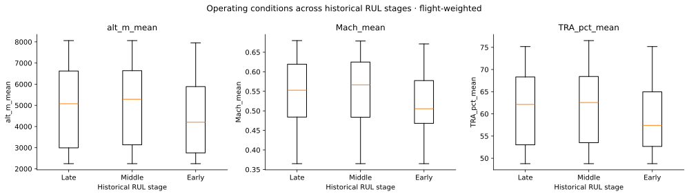
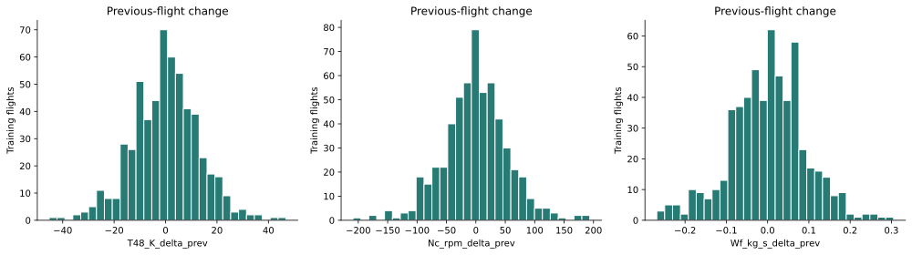

-0.540 to -0.299
Pearson r across 7 training source histories; all negative.
TASK 05 / INITIAL DESCRIPTIVE ANALYSIS
A temperature pattern.
A reason to investigate.
Verified descriptive findings from the training histories, before any RUL model is fitted. Correlation is not causality or forecast accuracy.
Get the executed notebook ↓Pearson r across 7 training source histories; all negative.
Median paired engine-stage contrast; retrospective RUL groups.
Flights; 7 source histories but 6 conservative engine-ID groups.
T48 deserves a place in later model comparisons. Regime effects, repeated flights and a small fleet prevent stronger conclusions.






| Stage | Altitude median [m] | Mach median | Throttle median [%] |
|---|---|---|---|
| Late | 5075.2 | 0.553 | 62.13 |
| Middle | 5291.1 | 0.566 | 62.55 |
| Early | 4203.0 | 0.505 | 57.41 |
Operating medians are flight-weighted. Validation T48 r: -0.470 to -0.196; previously inspected, so not blinded confirmation. Test and quarantine are excluded from sensor hypotheses.
FOLLOW THE EVIDENCE
Default input reconstructs means/history from tracked Task 3 cycle exports. It does not restore within-flight variance or reprocess raw HDF5.
Scope: Project Tasks V6.0, page 2. Source: Kaggle-acquired N-CMAPSS DS01/DS02, through audited Task 3 means and Task 4 split assignments. Degradation and readings are simulated. No predictive model fitted.
Current source labels are recorded; original download-version matching and cross-subset independence remain open. P2 is now defined by journal Table 5; the frozen preparation version still excludes it. AI assistance disclosure.